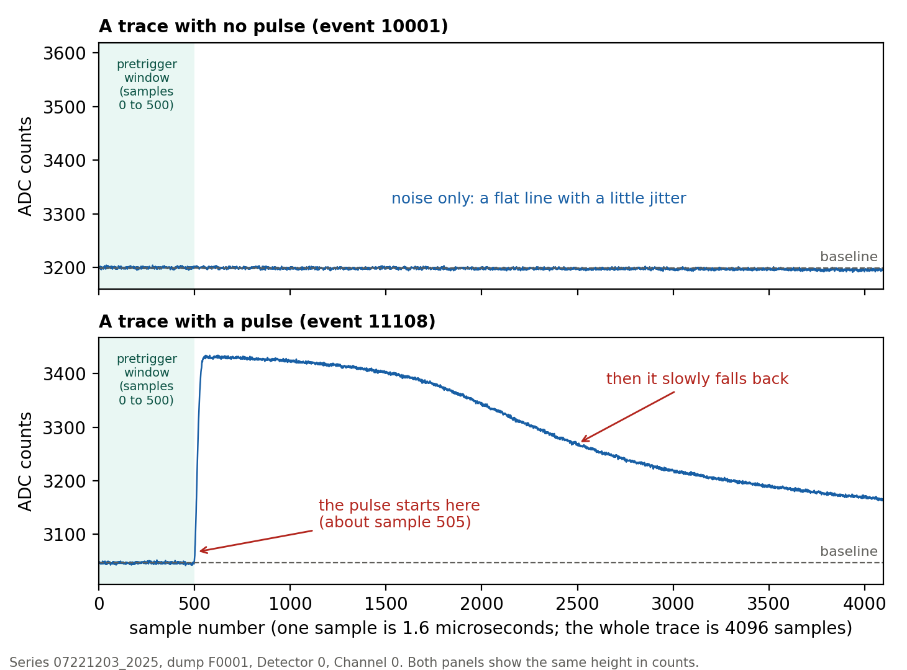
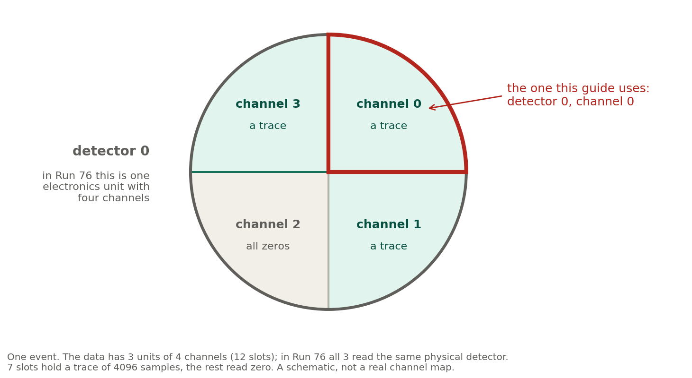

What you will do. Download one set of real detector data, open it in a notebook, look at it, and reproduce one number from an existing note. You will need the setup guide for Linux finished first.
darkmatter_cli_env exists and works).conda activate darkmatter_cli_env. The
start of the line should show (darkmatter_cli_env).| Word | What it means here |
|---|---|
| Series | One data-taking session, named like 07221203_2025. A
typical series lasts hours; some are shorter because they are
tests. |
| Dump | One file set taken from a series, numbered F0001,
F0002, … |
| Event | One moment when the system decided something might have happened and saved a short recording from every detector. Events are numbered in time order. See the picture below, and the appendix. |
| Detector / channel | The software numbers the readout units 0, 1 and 2 (“detectors”), and each has four channels. In Run 76 all three read the same physical detector, so a “detector” here means one readout unit with 4 channels. We use detector 0, channel 0. |
| Trace | The recorded signal for one channel in one event: 4096 numbers, one per sample. |
| Sample | One reading. Each sample is 1.6 microseconds long, and measures the average of the output (usually a voltage) over that time interval. |
| ADC counts | The unit of the numbers in a trace. They are whole numbers (integers) from the analog-to-digital converter, proportional to the measured quantity (such as a voltage), but really just integers. In this dump the largest are around 8000, so they need at least 13 bits; the exact width is not stated in this guide. |
| Baseline | The flat level a trace sits at when nothing happens. |
| Pretrigger window | The first samples of a trace, used to measure the baseline. |
| Pulse | A sudden rise above the baseline that then slowly falls back. It is what a particle leaves in a trace. |

Figure: two traces on the same scale. Top: noise only. Bottom: a pulse.
Open the notes site at villano-lab.github.io/NSDF-Data and read these, in order:
You do not need to follow every number. Just learn the words in the table above.
First go to your home folder, so the data lands in the right place. Type this, then press Enter:
cd ~Now download the data:
nsdf-cli download 07221203_2025_F0001The download puts the data in an idx folder in
the folder you are in. Because you went to your home folder
first, it lands in ~/idx, inside a folder named
07221203_2025_F0001. The data is about 34 MB. Wait until
the prompt comes back.
Never download from inside the NSDF-Data folder. Its
idx folder would sit inside the project, where Git can pick
it up. If you have already downloaded there, move the idx
folder to your home folder, and tell your lead.
What these lines do: the first one moves you to your
home folder (the cd line). The second,
nsdf-cli download, fetches the data set from the NSDF
servers over the internet and puts it in a new idx
folder.
Do not move or edit the downloaded files, and do not add them to Git. They are not part of the project.
If the message says the folder already exists, the data may already
be there. To check, type ls ~/idx: if the list
shows a folder named 07221203_2025_F0001, you already have
it, and an error message means there is no idx folder yet.
Ask the project lead before you delete anything.
Notebooks must be opened from the folder
data_analysis/R76/student, inside the project. In the
terminal, type these lines:
conda activate darkmatter_cli_env
cd ~/Research/NSDF-Data/data_analysis/R76/student
jupyter labWhat these lines do: conda activate
switches your environment on, cd moves you into the folder
where the notebooks live, and jupyter lab starts the
notebook program. Leave this terminal window open while you
work: closing it stops Jupyter.
Your web browser opens a Jupyter page. Click File, then New, then Notebook. If it asks which kernel to use, choose darkmatter_cli_env.
A notebook is a list of boxes called cells. Type code in a cell and press Shift + Enter to run it. The result appears under the cell. Press Enter (without Shift) to keep typing in the same cell.
Give your notebook a name: click the name at the top, type
first-analysis-yourname, and press Enter.
Copy this into the first cell and press Shift + Enter:
import sys
from pathlib import Path
# Tell Python where the pulse library (the python folder) is.
# This looks upward from the notebook's folder until it finds the project,
# so it works wherever in the project your notebook is.
here = Path.cwd().resolve()
REPO = next((p for p in [here, *here.parents] if (p / "python" / "pulse_io.py").exists()), None)
assert REPO, "Start Jupyter from inside the NSDF-Data folder."
sys.path.insert(0, str(REPO / "python"))
from nsdf_dark_matter.idx import load_all_data
import pulse_io as pio
# Open the dump you downloaded.
cdms = load_all_data(str(Path.home() / "idx" / "07221203_2025_F0001"))
# Take every trace from detector 0, channel 0, into one table.
ids, pulses = pio.load_channel_batch(
cdms, pio.filter_by_detector(cdms.get_detector_ids(), 0), 0)
print(pulses.shape)The output is (1517, 4096): 1517 traces, each with 4096
samples. If you get a different number, stop and check the dump name and
the folder in Step 2.
Put this in a new cell (click + in the toolbar, or use the menu Insert, then Insert Cell Below), and run it:
import matplotlib.pyplot as plt
plt.plot(pulses[0])
plt.xlabel("sample (1.6 microseconds each)")
plt.ylabel("ADC counts")
plt.show()Now change the 0 to 1, 2,
3 and run again. Most traces look like flat noise, with a
little jitter. Row 1 is a quiet trace like the top one in the figure
above. To see a pulse, try row 1095. Then see the appendix if you want to
know more about what you are looking at.
Note 2 says that for this dump, a strict selection leaves 179 quiet traces. Run this in a new cell:
from dataclasses import replace
from pulse_config import DEFAULT_CONFIG
import pulse_quantities as pq
import pulse_cuts as pc
import numpy as np
c500 = replace(DEFAULT_CONFIG, pretrigger_samples=500)
quiet = pc.excursion_band(pulses, c500) & (np.log10(pq.bstd(pulses)) < 0.5)
print(quiet.sum())The output is 179. If you see a different number, that is worth knowing. Write down the number you got and the steps you took, and tell the project lead. Do not change the project’s code to make the number match.
In Jupyter, click + to add a cell and change its type from Code to Markdown in the toolbar. In that cell, write a few sentences in plain English: what you loaded, what you plotted, and what number you got. Then press Shift + Enter.
Save with Command + S (macOS) or Ctrl + S (Windows and Linux).
Once your branch exists (setup guide, Step 8), save your notebook to Git. The first terminal is busy: it is still running Jupyter, so leave it open. Open a new terminal for the Git commands. A new terminal starts in your home folder, so the first line below moves you into the project folder from the setup guide:
cd ~/Research/NSDF-Data
git add data_analysis/R76/student/first-analysis-yourname.ipynb
git commit -m "First analysis: load dump 1 and count the quiet traces"
git push -u origin student-yournameWhat these lines do: git add picks the
file you want to save, git commit saves a snapshot of it
with your short message, and git push uploads that snapshot
to GitHub, to your own branch.
Commit only your notebook. Check the list before committing with
git status. If you see .bin files or anything
from the idx folder, do not add them.
| What you see | What to do |
|---|---|
ModuleNotFoundError: No module named 'nsdf_dark_matter' |
You are not in the environment. Run conda activate darkmatter_cli_env, then restart the
notebook kernel (Kernel, then Restart
Kernel). |
ModuleNotFoundError: No module named 'pulse_io' |
Jupyter was started from the wrong folder. Close it and start it
again from data_analysis/R76/student. |
FileNotFoundError on the dump folder |
The download did not finish, or it went somewhere else. Check the folder in Step 2. |
| A huge spike at the very start of traces | This is a real electronics glitch in the first few samples, not a bug. It is explained in Note 2a. |
The kernel is not darkmatter_cli_env |
Click the kernel name at the top right and choose darkmatter_cli_env. |
Do not run 07221203_2025_dump1_noise.ipynb unless the
project lead says it is fine. It overwrites a shared archive file.
You do not need this to finish the guide. It explains the words in the table at the top.
The detector system watches its sensors all the time. Whenever it decides that something may have happened, it saves a short recording from every sensor. That moment is one event. Events are numbered in time order, and the numbers restart in every dump, so an event number alone does not identify an event.
In Run 76 one physical detector (a silicon detector, S104) is read out by three older (“legacy”) electronics units, each with four channels, all connected to that same detector. The software calls the units detector 0, 1 and 2, and so does this guide. One event therefore holds up to 3 x 4 = 12 recordings. Each recording is a trace: 4096 numbers, one per sample. In this dump, 7 of the 12 slots hold a trace and the other 5 read all zeros. We follow one channel, detector 0 channel 0, through all 1517 events.

Figure: the four channels of detector 0 in one event. It is a schematic: the four sectors only stand for the channel numbers, and it does not show where the real sensors sit. The detector’s own sensor layout is similar to the SuperCDMS HV detector mask, but not the same.
A trace looks like a flat line with a little jitter (the baseline) until something happens. The first 500 samples, the pretrigger window, are used to measure the baseline. If a particle deposits energy, the trace jumps up at once and then slowly falls back: a pulse. In the figure in the words table, the pulse in event 11108 starts just after sample 500; in this dump, many pulses start there.
The trace in the figure is row 1095 of the table pulses
from Step 4 (the row is the position in the table, not the event
number). Row 1 is a quiet trace.
Anthony Villano, project lead: anthony.villano@ucdenver.edu
When you write, include the step number, the command you typed, and the last few lines the computer printed. A screenshot helps. Nobody will be annoyed by a question about a step that did not work.
Guide version 13, 9 October 2026, Linux edition. Written for beginners; please tell the project lead where a step was unclear.